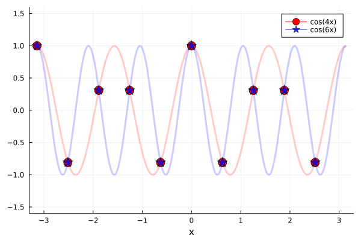

Aliasing
In pseudospectral methods, when computing nonlinear terms then aliasing errors come into play. These aliasing errors originate from the discrete nature of the grid and, specifically, the restriction that a grid discretized with $n_x$ points can only resolve up to $n_x$ wavenumbers in Fourier space.
Consider a grid with a total of $n_x$ points. Both harmonics $e^{2\pi i k x / L_x}$ and $e^{2\pi i (k+n_x) x / L_x}$, with $k$ an integer, are indistinguishable when evaluated on the discrete grid-points of this grid. When we compute nonlinear terms in physical space (products of various fields), we may end up with terms that project on harmonics with wavenumber beyond the maximum wavenumber that can be resolved by our grid. In that case, those wavenumbers will be erroneously projected onto some lower wavenumber modes that fit our domain.
Take, for example, functions $\cos(4x)$ and $\cos(6x)$ and let's see how they are represented on a grid $x \in [-π, π)$ with $n_x = 10$ grid points.
using FourierFlows, Plots
nx, Lx = 10, 2π
grid = OneDGrid(nx, Lx)
f1(x) = cos(4x)
f2(x) = cos(6x)
p = plot(grid.x, f1.(grid.x), lw=0, marker=:circle, c=:red, ms=8, ylims=(-1.6, 1.6), label="cos(4x)")
plot!(p, f1, lw=3, alpha=0.2, c=:red, xlims=(-Lx/2, Lx/2), label="")
plot!(p, grid.x, f2.(grid.x), lw=0, marker=:star5, ms=8.5, color=:blue, alpha=0.8, label="cos(6x)")
plot!(p, f2, lw=3, alpha=0.2, c=:blue, xlims=(-Lx/2, Lx/2), label="")
plot(p, xlabel="x", xlims=(-3.3, 3.3))
The take home message is that on this particular grid we cannot distinguish harmonics with wavenumbers 4 and 6. An attempt to represent harmonics with wavenumber 6 on this grid leads to aliasing errors. For example, say that we are solving an equation and at some point we compute the product $\cos(2x) \cos(4x)$. The result should be $\frac1{2} \cos(2x) + \frac1{2} \cos(6x)$, but on this grid $\cos(6x)$ is indistinguishable from $\cos(4x)$ and, therefore, what we compute will be indistinguishable from $\frac1{2} \cos(2x) + \frac1{2} \cos(4x)$!
To avoid aliasing errors we either (i) discard some of the wavenumber components in Fourier space from our fields before we transform to physical space, or (ii) pad our fields with Fourier components with zero power that correspond to higher wavenumbers than those resolved by the grid before transforming to physical space. This way, the aliasing errors, which will involve the higher wavenumbers, will be either (i) zero-ed out or (ii) only come about for wavenumbers beyond what our grid can resolve anyway. In FourierFlows.jl, the former dealiasing scheme is implemented.
FourierFlows.jl currently implements dealiasing by zeroing out the highest-aliased_fraction wavenumber components on a grid.
The number of wavenumber components that we need to zero-out to be sure the no aliasing errors infiltrate our solution depends on the order of the nonlinearities. For example, for quadratic nonlinearities, one expects that we need to discard the highest-1/2 of the wavenumber components. This way, when computing the product of two fields we won't have anything that projects onto harmonics with wavenumbers beyond those that our grid is able to resolve and, therefore, no aliasing errors.
The above-mentioned 1/2-rule for dealiasing for quadratic nonlinearities is, however, not the most efficient. Orszag (1972) pointed out that for quadratic nonlirearities, simply only discarding the highest-1/3 of wavenumber components is enough to save us from aliasing errors. To be fair, with Orszag's so-called 2/3-rule for dealiasing, still some aliasing errors occur, but those errors only occur to the higher-1/3 wavenumber components that will be zero-ed out next time we dealias our solution anyway.
When constructing a grid we can specify the aliased_fraction parameter. By default, this is set to $1/3$, appropriate for quadratic nonlinearities. Then dealias!(fh, grid) will zero-out the highest-aliased_fraction wavenumber components of fh.
FourierFlows.dealias! — Functiondealias!(fh, grid)Dealias array fh on the grid based on the grids's aliased_factor.
If we construct a grid with aliased_fraction=0, e.g.,
grid_nodealias = OneDGrid(nx, Lx; aliased_fraction=0)OneDimensionalGrid
├─────────── Device: CPU
├──────── FloatType: Float64
├────────── size Lx: 6.283185307179586
├──── resolution nx: 10
├── grid spacing dx: 0.6283185307179586
├─────────── domain: x ∈ [-3.141592653589793, 2.5132741228718345]
└─ aliased fraction: 0.0then dealias!(fh, grid_nodealias) will have no effect whatsoever on fh.